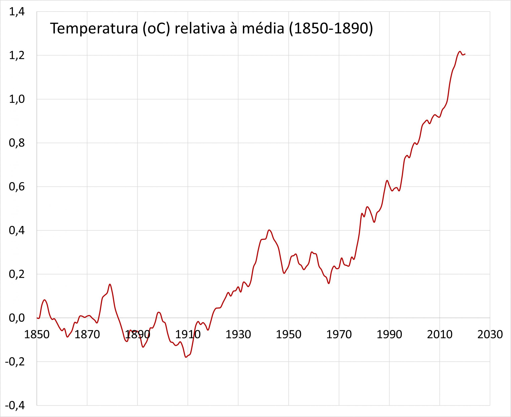

Por que o nível do mar muda?
A elevação do nível do mar pode ocorrer por quatro vias principais: (1) o aquecimento do oceano devido ao aquecimento global (a água se expande quando esquenta); (2) o derretimento das camadas de gelo na Groenlândia e Antártica; (3) o derretimento de pequenas geleiras em todo o mundo; e (4) a diminuição da quantidade

O aquecimento do oceano é responsável por cerca de metade das mudanças que observamos no nível do mar (a isso se costuma dar o nome de “dilatação térmica”); o derretimento de milhares de pequenas geleiras provoca a outra metade. Desde os anos 1800, o derretimento das camadas de gelo na Antártica e Groenlândia contribuiu relativamente pouco para a mudança do nível do mar. Entretanto, essas camadas estão se derretendo com mais rapidez devido ao aquecimento global e podem elevar muito mais o nível do mar no futuro.
O quanto o nível do mar pode subir?
Devido ao aquecimento global, a dilatação térmica do oceano e o derretimento das geleiras continuarão a desempenhar um papel na elevação do nível do mar no futuro [3]. Se todas as pequenas geleiras do planeta derretessem, o nível do mar subiria cerca de 50 cm. O impacto da dilatação térmica sobre a elevação do nível do mar no futuro dependerá da persistência do aquecimento da água do mar. Talvez a grande contribuição para a elevação do nível do mar no futuro provenha das maiores camadas de gelo do mundo, situadas na Groenlândia e na Antártica do Leste e do Oeste. Se essas camadas derreterem completamente, o nível do oceano se elevará em cerca de 7 m (camadas da Groenlândia), 5 m (camadas da Antártica do Oeste) e 53 m (camadas da Antártica do Leste). Por isso, muitos glaciólogos investigam as mudanças causadas pelo aquecimento global na Groenlândia e na Antártica.

Com esse gráfico podemos ver o nivel do mar aumentando cada vez mais a cada ano.